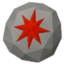
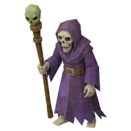
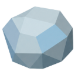

Chaos Rune
Rune
| Property | Value |
|---|---|
| Value | 20 coins |
| Sells for | 2.5 coins each |
| High Alchemy | 3 coins |
| Stacks | Yes |
Dropped by
| Monster | Level | Amount | Chance |
|---|---|---|---|
 Lich Acolyte | 78 | 3–8 | 40% |
Made by
| Recipe | Level | Needs |
|---|---|---|
| 💫 Bind Chaos Runes | 💫 Runecrafting 35 |  Rune Essence |
Slayer shop
| Amount | Price |
|---|---|
| 100 | 25 Slayer points |
Used to make
| Recipe | Level | Amount |
|---|---|---|
| 🧵 Weave Sage Gloves | 💎 Artifice 45 | 3 |
| 🧵 Weave Sage Boots | 💎 Artifice 47 | 3 |
| 🧵 Weave Sage Hat | 💎 Artifice 49 | 6 |
| 🪶 Cut Maple Staff | 🪶 Fletching 50 | 10 |
| 🧵 Weave Sage Robe Bottom | 💎 Artifice 52 | 9 |
| 🧵 Weave Sage Robe Top | 💎 Artifice 55 | 12 |
Spells
- Chaos Blast: Sorcery 40, uses 3
- Death Wave: Sorcery 62, uses 2
- Teleport to Bleakhaven Ruins: Sorcery 58, uses 20
- Teleport to The Voidscar: Sorcery 80, uses 15